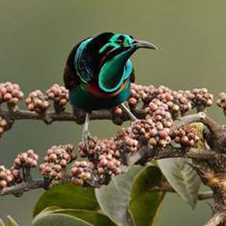
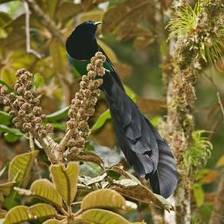

Astrapia

|
Arfak astrapia (Astrapia nigra) ตามธรรมชาตินกชนิดนี้เคยผสมพันธุ์ข้ามสายพันธุ์จนทำเกิดสายพันธุ์ Elliot's sicklebill (Epimachus ellioti) ผู้ศึกษานกวิทยาคิดว่านกพันธุ์นี้เป็นนกคนละสายพันธุ์และเสี่ยงที่จะสูญพันธุ์กันแต่บางคนก็ยิงคิดว่าเป็นการผสมข้ามสายพันธุ์ ลักษณะ : มีขนาดลำตัวประมาณ 76ซม. ขนสีดำเหลือบม่วงเขียวและสีบรอนซ์ ตัวผู้จะมีขนหางที่กว้าง ยาว และนุ่มสลวย ขนตรงอกสีดำและขนตรงหัวที่สลับซับซ้อนกันและมีสีดำ ส่วนตัวเมียขนจะออกสีน้ำตาลซีดยกเว้นบริเวณท้อง อาหารหลักจะเป็นผลในตระกูลเตยทะเล |
|
splendid astrapia (Astrapia splendidissima) นกชนิดนี้อาศัยอยู่ตามที่ราบสูงทางตะวันตกของนิวกินีและกิน ผลไม้ แมลง กิ้งก่าและกบเป็นอาหาร
ลักษณะ : มีขนาดลำตัวประมาณ 39ซม. ขนส่วนใหญ่มีสีเหลืองเขียว มีขนสีน้ำเงินเขียวบริเวณลำคอและส่วนล่างมีขนสีเขียวเข้ม ขนหางมีสีขาวและตรงปลายมีสีดำ ส่วนตัวเมียมีขนสีน้ำตาลปกคลุมมีขนบริเวณหัวมีสีดำ |
 |

|
Ribbon-tailed astrapia (Astrapia mayeri) นกชนิดนี้พบได้เฉพาะแถบป่าละเมาะทางตะวันตกบริเวณที่ราบสูงของปาปัวนิวกินีเช่นเดียวกับนกปักษาสวรรค์หลายๆชนิดนกชนิดนี้จะจับคู่กับตัวเมียเพียงตัวเดียวเท่านั้นและนกชนิดนี้เพิ่งถูกค้นพบได้ไม่นานมานี้ เนื่องจากถิ่นที่อยู่อาศัยของพวกมันได้ถูกคุกคามและการถูกล่าเพื่อต้องการขน ทำให้โดนขึ้นบัญชีแดงเป็นสัตว์ห้ามล่าและห้ามซื้อขาย เนื่องจากหางที่ยาวทำให้พวกมันยากต่อการหนีทั้งจากการมนุษย์และผู้โดยธรรมชาติ
ลักษณะ : มีขนาดลำตัวประมาณ 32ซม. (ไม่รวมหางหากนับความยาวถึงหางอาจะยาวได้มากกว่า 1เมตร) ขนของตัวผู้เป็นลักษณะคล้ายกำมะหยี่สีดำ สีรุ่งเฉดเขียวมะกอกและออกบรอนซ์ บริเวณเหนือจะงอยปากมีขนทรงกลมๆเสมือนเป็นเครื่องประดับ หางของมันมีสีขาวตรงปลายมีสีดำและมีความยาวมากๆ ขนบริเวณหัวมีสีเขียวรุ้ง ตัวเมียสีขนจะออกไปทางน้ำตาลและไม่มีหางที่ยาวเหมือนตัวผู้ |
|
Princess Stephanie's astrapia (Astrapia stephaniae) หรือรู้จักกันในอีกชื่อคือ Stephanie's astrapia นกชนิดนี้อาศัยอยู่ใจกลางของป่าดิบเขาในปาปัวนิวกินี ถูกค้นพบโดย คาร์ล ฮันส์สไตน์ ในปี 1884 และตั้งชื่อเพื่อเป็นเกียรติให้แก่ เจ้าหญิงสเตฟานี่แห่งอาณาจักรเบลเยี่ยม
ลักษณะ : มีขนาดลำตัวประมาณ 37ซม. ขนที่ลำตัวสีดำและบริเวณหน้าอกเป็นสีรุ่งเฉดเขียวน้ำเงิน บริเวณหัวมีสีม่วง มีหางสีม่วงดำและยาวมาก ส่วนตัวเมียขนลำตัวมีสีน้ำตาลเข้ม และสีฟ้าโทนดำ และส่วนล่างมีสีน้ำตาลซินนามอนแกมดำ |

|
|  |
Huon astrapia (Astrapia rothschildi) นกชนิดนี้อาศัยอยู่แถบป่าดิบเขาบริเวณคาบสมุทรฮูรอน ปาปัวนิวกินี อาหารที่กินส่วนใหญ่จะเป็นจำพวกผลไม้และเมล็ดต่างๆ
ลักษณะ : ขนาดลำตัวประมาณ 69ซม. ลำตัวปกคลุมด้วยขนสีดำและมีขนรูปทรงคล้ายมงกุฎบนหัวสีน้ำเงินมันวาว ขนบริเวณหลังเป็นสีเขียวเข้มมะกอก ขนตรงอกเป็นสีม่วงรุ้งเฉดเขียวและมีขนหางสีม่วงดำที่ยาวมาก ตัวเมียมีขนาดเล็กกว่าตัวผู้และขนตามลำตัวจะเป็นสีดำเข้มและสีน้ำตาลซีดบริเวณท้อง |